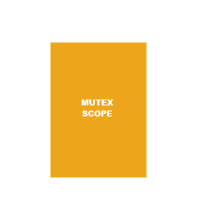
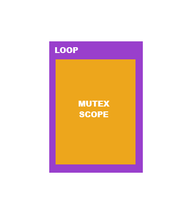
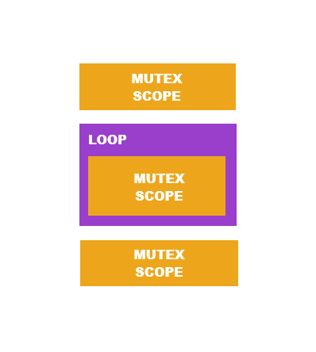

Live Coding
Each cell is executed in a separate thread. To prevent data races, the shared resources are guarded by a mutex. This mutex is acquired and released automatically, so you don’t have to think about it. In JODIN there are 3 different kinds of cells: regular cell, looping cell, and composite cell. To do live coding, you have to use looping cells or composite cells.

Regular Cell
…
- The cell’s contents are executed once.
- The mutex is acquired at the start of execution and released at the end.

Looping Cell
#+loop
…
- The cell’s contents are executed repeatedly until a
break main statement is executed.
- The mutex is acquired at the start of every successive execution and released at the end.
- If another cell requests to acquire the mutex while this cell is executing, it can do so at the end of current iteration ends.

Composite Cell
…
loop: { … }
…
- The cell’s contents are executed once.
- A mutex scope is inserted before and after every scope labeled as
loop.
- A mutex scope is inserted inside every scope labeled as
loop.
- If another cell requests to acquire the mutex while this cell is executing, it can do so at the beginning or end of one of the
loop scopes.